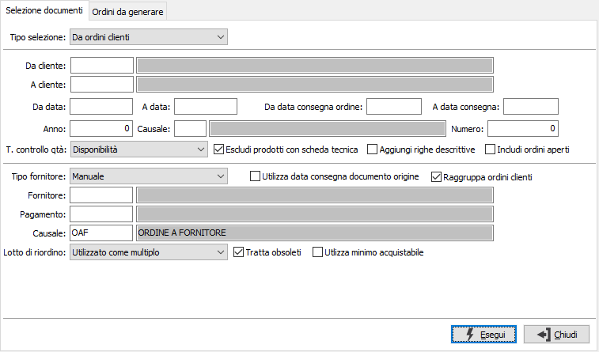
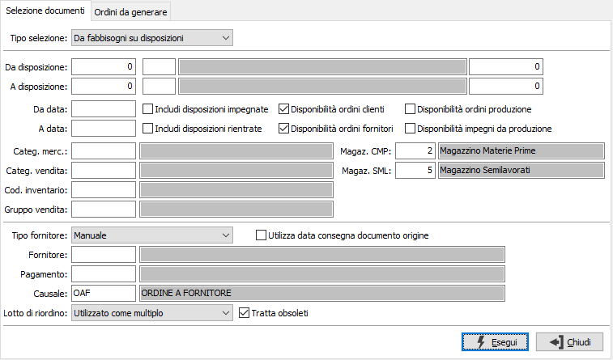
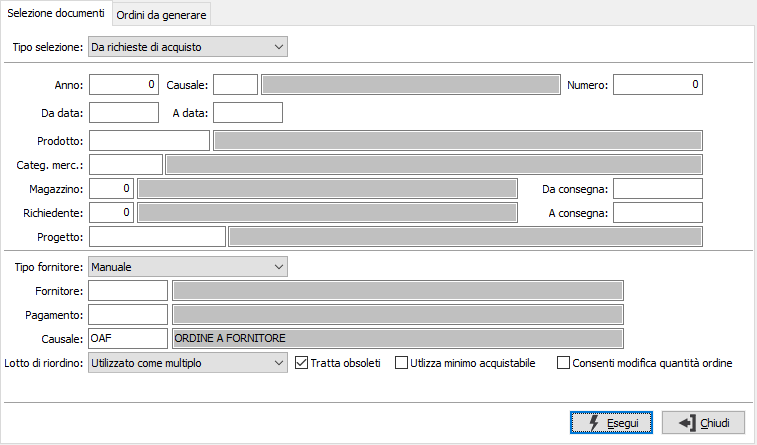
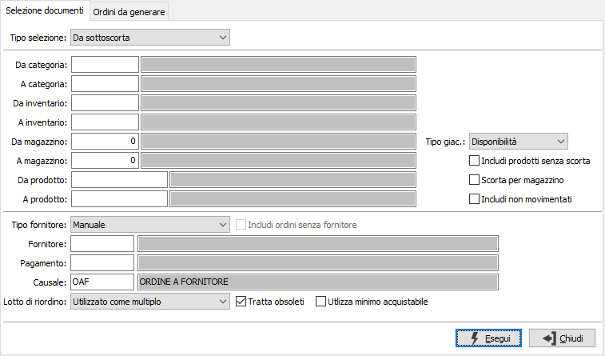
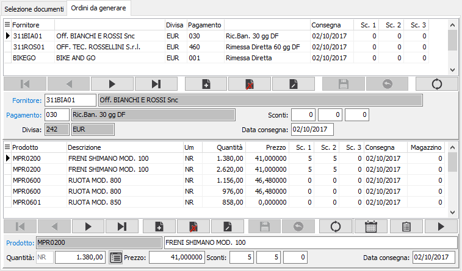
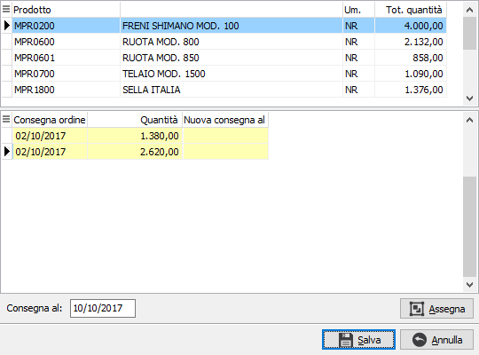
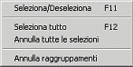
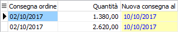
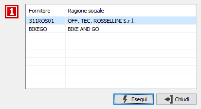
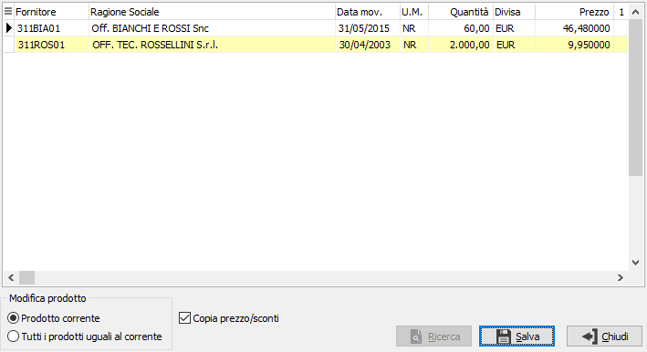

Generazione ordini fornitori
La procedura consente di generare gli ordini fornitori utilizzando gli ordini clienti, il sottoscorta, le richieste di acquisto oppure i dati di produzione, sempre che i moduli relativi siano installati.
La finestra principale si articola su due pagine: una per i parametri di selezione dei documenti con cui effettuare la generazione e l'altra con il risultato dell'elaborazione, ovvero gli ordini fornitori che dovranno essere generati. In questa sezione sarà possibile apportare anche delle modifiche prima di effettuare la generazione definitiva.
Selezione documenti
La richiesta parametri si diversifica a seconda che si utilizzi la generazione da ordini clienti oppure la generazione da fabbisogni su disposizioni, la generazione da richieste di acquisto oppure la generazione da sottoscorta; il campo tipo selezione determina il tipo di selezione dei dati per la generazione degli ordini fornitori. Se non sono presenti i moduli necessari al funzionamento della procedura, questo sarà segnalato e non sarà possibile utilizzarla. Se è presente un solo modulo la scelta del tipo selezione sarà limitata al solo modulo presente (ordini o produzione).
Se attivata da configurazione la gestione del codice fornitore sull'ordine cliente, se la riga di ordine cliente è già stata attribuita manualmente ad un fornitore, il rigo di ordine generato viene attribuito direttamente a tale fornitore. Se presente il modulo di produzione sarà presente la casella Escludi prodotti con scheda tecnica, spuntata, per escludere le righe ordini di detti articoli dalla generazione.

DA CLIENTE: eventuale codice del cliente, presente in anagrafica clienti, da cui si vuole iniziare la selezione. Confermando a vuoto, la selezione inizia dal primo cliente valido. Sul campo sono attive le funzioni di ricerca (F9).
A CLIENTE: eventuale codice del cliente, presente in anagrafica clienti, con cui si vuole terminare la selezione. Confermando a vuoto, la selezione termina con l’ultimo cliente valido. Sul campo sono attive le funzioni di ricerca (F9).
DA DATA: eventuale data da cui deve iniziare l’analisi dei documenti relativamente ai precedenti parametri di selezione. Confermando a vuoto, l’analisi inizia con il primo documento valido.
A DATA: eventuale data con cui si desidera terminare l’analisi dei documenti relativamente ai precedenti parametri di selezione. Confermando a vuoto, l’analisi si conclude con l'ultimo documento valido.
DA DATA CONSEGNA: data di consegna da cui deve iniziare l’analisi degli ordini. Confermando a vuoto, l’analisi inizia con il primo ordine valido.
A DATA CONSEGNA: data di consegna con cui si desidera terminare l’analisi degli ordini. Confermando a vuoto, l’analisi si conclude con l'ultimo ordine valido.
ANNO: indica l'anno degli ordini a cui si vuole limitare la selezione.
CAUSALE: eventuale codice della Causale ordini a cui si vuole limitare la selezione. Sul campo sono attive le funzioni di ricerca (F9).
NUMERO: indica il numero dell'ordine a cui si vuole limitare la selezione, in combinazione con anno e/o causale.
TIPO CONTROLLO QUANTITÀ: definisce il tipo di controllo da utilizzare sulla quantità di generazione: nessun controllo, controllo con esistenza oppure con disponibilità.
ESCLUDI PRODOTTI CON SCHEDA TECNICA: il parametro è presente se attivo il modulo di produzione; se spuntato esclude dalla generazione i prodotti che alla data dell'ordine cliente hanno una scheda tecnica attiva.
AGGIUNGI RIGHE DESCRITTIVE: se la casella è spuntata, in fase di salvataggio finale, saranno inserite le righe descrittive con i riferimenti agli ordini clienti di origine.
INCLUDI ORDINI APERTI: se spuntato considera nell'elaborazione degli ordini clienti anche gli ordini aperti, altrimenti li esclude.
TIPO FORNITORE: definisce il metodo di assegnazione del fornitore: valori possibili: manuale, ultimo fornitore movimentato dal prodotto, fornitore abituale del prodotto; il prodotto è riferito a quello presente sulle righe che saranno selezionate.
UTILIZZA DATA CONSEGNA DOCUMENTO ORIGINE: se spuntata questa casella, la generazione delle righe riporterà come data di consegna la data presente sul rigo ordine di origine.
RAGGRUPPA ORDINI CLIENTI: genera gli ordini fornitori raggruppando gli ordini clienti (casella con segno di spunta); se la casella è vuota consente di generare per ogni ordini cliente un singolo ordine fornitore.
FORNITORE: nel caso di tipo fornitore manuale, è il codice del fornitore per cui deve essere generato l'ordine; negli altri casi viene utilizzato come filtro aggiuntivo sulla selezione. Sul campo sono attive le funzioni di ricerca (F9).
PAGAMENTO: codice del pagamento da impostare sugli ordini che saranno generati; se viene lasciato vuoto sarà assegnato quello indicato sull'anagrafica del fornitore. Sul campo sono attive le funzioni di ricerca (F9).
CAUSALE: codice della causale con cui sarà generato l'ordine, viene proposta quella definita in configurazione. Se viene lasciata vuota sarà assegnata quella indicata sull'anagrafica del fornitore. Sul campo sono attive le funzioni di ricerca (F9).
LOTTO DI RIORDINO: definisce come gestire la quantità in relazione al lotto di riordino del prodotto:
utilizzato come minimo: la quantità non sarà mai inferiore al lotto di riordino se diverso da zero;
utilizzato come multiplo: la quantità sarà calcolata sempre come multiplo (arrotondata per eccesso) del lotto di riordino se diverso da zero;
non utilizzato: non sarà mai utilizzato il lotto di riordino, né come minimo né come multiplo.
TRATTA OBSOLETI: se spuntata considera anche gli articoli obsoleti, altrimenti saranno scartati.
Utilizza minimo acquistabile: se presente la spunta, la causale ordine ha attivo il controllo sul minimo acquistabile e sul prodotto è presente una quantità minima acquistabile superiore alla quantità del rigo in fase di generazione sarà assegnata come quantità del rigo la quantità minima acquistabile del prodotto.
Generazione da fabbisogni su disposizioni

DA DISPOSIZIONE: tre campi per contenere rispettivamente anno, causale e numero della disposizione da cui si vuole iniziare la selezione. Confermando a vuoto, la selezione inizia dalla prima disposizione compatibile con i successivi parametri.
A DISPOSIZIONE: tre campi per contenere rispettivamente anno, causale e numero della disposizione con cui si vuole concludere la selezione. Confermando a vuoto, la selezione termina con l’ultima disposizione compatibile con i successivi parametri.
DA DATA: data disposizione da cui si vuole iniziare la selezione. Confermando a vuoto, la selezione inizia dalla prima data valida.
A DATA: data disposizione con cui si vuole concludere la selezione. Confermando a vuoto, la selezione inizia dalla prima data valida.
INCLUDI DISPOSIZIONI IMPEGNATE: definisce se considerare anche le disposizioni che sono già impegnate (casella con segno di spunta).
INCLUDI DISPOSIZIONI RIENTRATE: definisce se considerare anche le disposizioni che sono già rientrate (casella con segno di spunta).
DISPONIBILITÀ ORDINI CLIENTI: determina l'aggiunta al calcolo della disponibilità di magazzino dell'impegno derivante dagli ordini clienti (casella con segno di spunta). Viene proposto quanto come indicato nella configurazione produzione.
DISPONIBILITÀ ORDINI FORNITORI: determina l'aggiunta al calcolo della disponibilità di magazzino dell'ordinato derivante dagli ordini fornitori (casella con segno di spunta). Viene proposto quanto come indicato nella configurazione produzione.
DISPONIBILITÀ ORDINI PRODUZIONE: determina l'aggiunta al calcolo della disponibilità di magazzino dell'ordinato derivante dalla produzione (casella con segno di spunta).
DISPONIBILITÀ IMPEGNI DA PRODUZIONE: determina l'aggiunta al calcolo della disponibilità di magazzino dell'impegno derivante dalla produzione (casella con segno di spunta).
CATEGORIA MERCEOLOGICA: eventuale codice della categoria merceologica, riferita ai prodotti, per cui effettuare la selezione. Sul campo sono attive le funzioni di ricerca (F9).
CATEGORIA DI VENDITA: eventuale codice della categoria di vendita, riferita ai prodotti, per cui effettuare la selezione. Sul campo sono attive le funzioni di ricerca (F9).
CODICE INVENTARIO: eventuale codice inventario, riferito ai prodotti, per cui effettuare la selezione. Sul campo sono attive le funzioni di ricerca (F9).
GRUPPO VENDITA: eventuale codice del gruppo vendita, riferito ai prodotti, per cui effettuare la selezione. Sul campo sono attive le funzioni di ricerca (F9).
MAGAZZINO COMPONENTI: codice del magazzino da utilizzare per i progressivi delle materie prime. Sul campo sono attive le funzioni di ricerca (F9) sulla tabella magazzini. Viene proposto quello riportato in configurazione produzione.
MAGAZZINO SEMILAVORATI: codice del magazzino da utilizzare per i progressivi dei semilavorati. Sul campo sono attive le funzioni di ricerca (F9) sulla tabella magazzini. Viene proposto, se attiva la gestione, quello riportato in configurazione produzione.
TIPO FORNITORE: definisce il metodo di assegnazione del fornitore: valori possibili: manuale, ultimo fornitore movimentato dal prodotto, fornitore abituale del prodotto; il prodotto è riferito a quello presente sulle righe che saranno selezionate.
UTILIZZA DATA CONSEGNA DOCUMENTO ORIGINE: se spuntata questa casella, la generazione delle righe riporterà come data di consegna la data presente sul rigo ordine di origine eventualmente collegato alla disposizione.
FORNITORE: nel caso di tipo fornitore manuale, è il codice del fornitore per cui deve essere generato l'ordine; negli altri casi viene utilizzato come filtro aggiuntivo sulla selezione. Sul campo sono attive le funzioni di ricerca (F9).
PAGAMENTO: codice del pagamento da impostare sugli ordini che saranno generati; se viene lasciato vuoto sarà assegnato quello indicato sull'anagrafica del fornitore. Sul campo sono attive le funzioni di ricerca (F9).
CAUSALE: codice della causale con cui sarà generato l'ordine, viene proposta quella definita in configurazione. Se viene lasciata vuota sarà assegnata quella indicata sull'anagrafica del fornitore. Sul campo sono attive le funzioni di ricerca (F9).
LOTTO DI RIORDINO: definisce come gestire la quantità in relazione al lotto di riordino del prodotto:
utilizzato come minimo: la quantità non sarà mai inferiore al lotto di riordino se diverso da zero;
utilizzato come multiplo: la quantità sarà calcolata sempre come multiplo (arrotondata per eccesso) del lotto di riordino se diverso da zero;
non utilizzato: non sarà mai utilizzato il lotto di riordino, né come minimo né come multiplo.
TRATTA OBSOLETI: se spuntata considera anche gli articoli obsoleti, altrimenti saranno scartati.
Utilizza minimo acquistabile: se presente la spunta, la causale ordine ha attivo il controllo sul minimo acquistabile e sul prodotto è presente una quantità minima acquistabile superiore alla quantità del rigo in fase di generazione sarà assegnata come quantità del rigo la quantità minima acquistabile del prodotto.
Generazione da richieste di acquisto
E' necessario spiegare che la generazione degli ordini fornitori non è utilizzabile da tutti gli utenti, ma solo da quelli per cui sono state impostate le condizioni nelle tabelle della gestione richieste di acquisto.

ANNO: indica l'anno delle richieste a cui si vuole limitare la selezione.
CAUSALE: eventuale codice della Causale richieste a cui si vuole limitare la selezione. Sul campo sono attive le funzioni di ricerca (F9).
NUMERO: indica il numero della richiesta a cui si vuole limitare la selezione, in combinazione con anno e/o causale.
DA DATA: eventuale data da cui deve iniziare l’analisi dei documenti relativamente ai precedenti parametri di selezione. Confermando a vuoto, l’analisi inizia con il primo documento valido.
A DATA: eventuale data con cui si desidera terminare l’analisi dei documenti relativamente ai precedenti parametri di selezione. Confermando a vuoto, l’analisi si conclude con l'ultimo documento valido.
PRODOTTO: eventuale codice del prodotto, a cui si vuole limitare la selezione. Sul campo sono attive le funzioni di ricerca (F9).
CATEGORIA MERCEOLOGICA: eventuale codice della categoria merceologica, a cui si vuole limitare la selezione. Sul campo sono attive le funzioni di ricerca (F9).
MAGAZZINO: eventuale codice del magazzino, a cui si vuole limitare la selezione. Sul campo sono attive le funzioni di ricerca (F9).
RICHIEDENTE: eventuale codice dell'utente che ha effettuato la richiesta di acquisto, a cui si vuole limitare la selezione. Sul campo sono attive le funzioni di ricerca (F9).
DA CONSEGNA: eventuale data di consegna da cui deve iniziare l’analisi dei documenti relativamente ai precedenti parametri di selezione. Confermando a vuoto, l’analisi inizia con il primo documento valido.
A CONSEGNA: eventuale data di consegna con cui si desidera terminare l’analisi dei documenti relativamente ai precedenti parametri di selezione. Confermando a vuoto, l’analisi si conclude con l'ultimo documento valido.
TIPO FORNITORE: definisce il metodo di assegnazione del fornitore: valori possibili: manuale, ultimo fornitore movimentato dal prodotto, fornitore abituale del prodotto; il prodotto è riferito a quello presente sulle righe che saranno selezionate.
FORNITORE: nel caso di tipo fornitore manuale, è il codice del fornitore per cui deve essere generato l'ordine; negli altri casi viene utilizzato come filtro aggiuntivo sulla selezione. Sul campo sono attive le funzioni di ricerca (F9).
PAGAMENTO: codice del pagamento da impostare sugli ordini che saranno generati; se viene lasciato vuoto sarà assegnato quello indicato sull'anagrafica del fornitore. Sul campo sono attive le funzioni di ricerca (F9).
CAUSALE: codice della causale con cui sarà generato l'ordine, viene proposta quella definita in configurazione. Se viene lasciata vuota sarà assegnata quella indicata sull'anagrafica del fornitore. Sul campo sono attive le funzioni di ricerca (F9).
TRATTA OBSOLETI: se spuntata considera anche gli articoli obsoleti, altrimenti saranno scartati.
Utilizza minimo acquistabile: se presente la spunta, la causale ordine ha attivo il controllo sul minimo acquistabile e sul prodotto è presente una quantità minima acquistabile superiore alla quantità del rigo in fase di generazione sarà assegnata come quantità del rigo la quantità minima acquistabile del prodotto.
Consenti modifiche quantità ordine: se spuntata la casella, sulle righe generate sarà possibile modificare la quantità proposta.

DA CATEGORIA: eventuale codice della categoria merceologica da cui si vuole iniziare la selezione di analisi. Sul campo è attiva la ricerca (F9) sulla tabella Categorie merceologiche.
A CATEGORIA: eventuale codice della categoria merceologica con cui si vuole concludere la selezione di analisi. Sul campo è attiva la ricerca (F9) sulla tabella Categorie merceologiche.
DA INVENTARIO: eventuale codice Inventario da cui si vuole iniziare la selezione di analisi. Sul campo è attiva la ricerca (F9) sulla tabella Codici inventario.
A INVENTARIO: eventuale codice Inventario con cui vi vuole concludere la selezione di analisi. Sul campo è attiva la ricerca (F9) sulla tabella Codici inventario.
DA MAGAZZINO: eventuale codice del magazzino da cui si vuole iniziare la selezione di analisi. Confermando a vuoto, l’analisi inizia dal primo magazzino valido. Sul campo è attiva la ricerca (F9) F9 sulla tabella Magazzini.
A MAGAZZINO: eventuale codice del magazzino con cui si vuole concludere la selezione di analisi. Confermando a vuoto, l’analisi termina con l’ultimo magazzino valido. Sul campo è attiva la ricerca (F9) sulla tabella Magazzini.
DA PRODOTTO: eventuale codice dell'articolo, presente in anagrafica Prodotti, da cui si desidera iniziare la selezione dei movimenti di magazzino. Confermando a vuoto, la selezione inizia con il primo prodotto valido. Sul campo è attiva la ricerca (F9) sull’anagrafica prodotti.
A PRODOTTO: eventuale codice dell'articolo, presente in anagrafica Prodotti, a cui si desidera terminare la selezione dei movimenti di magazzino. Confermando a vuoto, la selezione termina con l’ultimo valido. Sul campo è attiva la ricerca (F9) sull’anagrafica prodotti.
TIPO GIACENZA: specifica su quale valore effettuare il controllo del sottoscorta: esistenza o disponibilità.
INCLUDI PRODOTTI SENZA SCORTA: definisce se includere nella selezione anche i prodotti che non hanno nessuna scorta definita (casella con segno di spunta).
SCORTA PER MAGAZZINO: definisce se considerare la scorta minima di ogni singolo magazzino, se presente, (casella con segno di spunta) altrimenti viene considerata la scorta minima del prodotto.
INCLUDI NON MOVIMENTATI: definisce se includere nella selezione anche i prodotti che non hanno movimenti di magazzino (casella con segno di spunta).
TIPO FORNITORE: definisce il metodo di assegnazione del fornitore: valori possibili: manuale, ultimo fornitore movimentato dal prodotto, fornitore abituale del prodotto; il prodotto è riferito a quello presente sulle righe che saranno selezionate.
INCLUDI ORDINI SENZA FORNITORE: attivo solo se il tipo fornitore non è manuale; consente di includere le righe che non hanno fornitore permettendone successivamente l'assegnazione con l'apposita funzione (casella con segno di spunta).
FORNITORE: nel caso di tipo fornitore manuale, è il codice del fornitore per cui deve essere generato l'ordine; negli altri casi viene utilizzato come filtro aggiuntivo sulla selezione. Sul campo sono attive le funzioni di ricerca (F9).
PAGAMENTO: codice del pagamento da impostare sugli ordini che saranno generati; se viene lasciato vuoto sarà assegnato quello indicato sull'anagrafica del fornitore. Sul campo sono attive le funzioni di ricerca (F9).
CAUSALE: codice della causale con cui sarà generato l'ordine, viene proposta quella definita in configurazione. Se viene lasciata vuota sarà assegnata quella indicata sull'anagrafica del fornitore. Sul campo sono attive le funzioni di ricerca (F9).
LOTTO DI RIORDINO: definisce come gestire la quantità in relazione al lotto di riordino del prodotto:
utilizzato come minimo: la quantità non sarà mai inferiore al lotto di riordino se diverso da zero;
utilizzato come multiplo: la quantità sarà calcolata sempre come multiplo (arrotondata per eccesso) del lotto di riordino se diverso da zero;
non utilizzato: non sarà mai utilizzato il lotto di riordino, né come minimo né come multiplo.
TRATTA OBSOLETI: se spuntata considera anche gli articoli obsoleti, altrimenti saranno scartati.
Utilizza minimo acquistabile: se presente la spunta, la causale ordine ha attivo il controllo sul minimo acquistabile e sul prodotto è presente una quantità minima acquistabile superiore alla quantità del rigo in fase di generazione sarà assegnata come quantità del rigo la quantità minima acquistabile del prodotto.
La pressione sul pulsante Seleziona determina l'avvio dell'elaborazione; se saranno trovati dati validi verranno generati, in modo provvisorio gli ordini fornitori e saranno resi disponibili per la modifica nella sezione Ordini da generare.
Questa sezione appare divisa in due parti: la parte superiore che contiene le teste degli ordini da generare, alle quali fanno riferimento le righe nella parte inferiore.

Da questa sezione è possibile modificare il codice del fornitore, il pagamento, gli sconti e la data di consegna; la modifica al codice del fornitore interessa anche il codice della divisa, che viene letto dall'anagrafica del fornitore stesso.
Se attiva la gestione misure prodotti, tramite questo pulsante, è possibile accedere alla finestra di Gestione misure in modo da utilizzare i dati per il calcolo della quantità. Il pulsante consente anche di verificare visivamente se sono presenti dei dati relativi alle misure in quanto appare in un colore diverso quando questi sono presenti.
La variazione del codice divisa, per modifica del fornitore, non ha alcun effetto sui prezzi presenti nelle righe sottostanti, che rimarranno nella divisa originale.
Nella sezione delle righe è possibile modificare la quantità, il prezzo, gli sconti e la data di consegna. Se attiva la gestione del dettaglio quantità è presente il bottone dettaglio, a destra del campo, tramite il quale sarà visualizzata la relativa finestra di dettaglio quantità; l'attivazione della finestra avviene comunque in automatico al momento dell'accesso al campo quantità. Sul campo unità di misura, tramite il tasto funzione F11 si può accedere alla finestra relativa al fattore di conversione.
Utilizzando il pulsante Assegnazione date è possibile effettuare l'assegnazione della stessa data per prodotto; questa operazione consente di selezionare più righe dello stesso prodotto ed assegnare la stessa data di consegna. Nella finestra vengono riportati, nella prima griglia, i prodotti attivi e selezionando un elemento compaiono, nella griglia inferiore le righe analitiche.


Da questa griglia è possibile selezionare le singole righe con il doppio clic del mouse oppure utilizzando il menù associato al tasto destro del mouse tramite cui è possibile anche annullare completamente la selezione, selezionare tutte le righe oppure annullare un raggruppamento già effettuato; nella parte bassa, sotto la griglia, è presente la nuova data di consegna che può essere anche inserita manualmente (di base viene proposta la data minore fra tutte le righe selezionate) ed il pulsante Assegna. Con le righe selezionate se si preme il pulsante Assegna, viene effettuata l'assegnazione e le righe appaiono come nell'esempio:
Tutte le operazioni effettuate all'interno di questa finestra saranno salvate solo se si preme il pulsante Salva in basso, se si esce dalla finestra premendo Annulla tutte le modifiche effettuate andranno perse; analogamente se si esce premendo Salva sarà effettuata l'assegnazione delle date come previsto.

Il pulsante Associa a fornitore può essere utilizzato per assegnare righe di ordine ad un altro fornitore, tra quelli presenti nella sezione superiore della finestra. Dopo aver selezionato uno o più righe premendo il pulsante compare la finestra a lato, dalla quale è possibile selezionare uno dei fornitori presenti. La pressione sul pulsante Esegui sposterà le righe precedentemente selezionate assegnandole al nuovo fornitore selezionato.
Il pulsante Assegnazione prezzi può essere utilizzato per modificare il prezzo di uno o più prodotti e per assegnare i prodotti ad altri fornitori, in relazione agli ultimi acquisti fatti. Dopo aver selezionato uno o più righe premendo il pulsante compare la finestra seguente, dalla quale è possibile selezionare uno dei prezzi presenti da associare alle singole righe selezionate oppure a tutti i prodotti uguali a quello selezionato; togliendo la spunta da Copia prezzi/sconti sarà possibile spostare un prodotto da un fornitore ad un altro, mantenendo le condizioni economiche esistenti. La pressione sul pulsante Esegui effettuerà l'operazione. Il pulsante Ricerca, consente di specificare direttamente un fornitore, se dalla ricerca degli ultimi acquisti, non sarà trovato nessun dato.

Al termine delle modifiche, con la pressione sul bottone Salva della toolbar o del tasto F10, verrà richiesto se effettuare la generazione degli ordini. La risposta affermativa darà il via alle operazioni di registrazione.